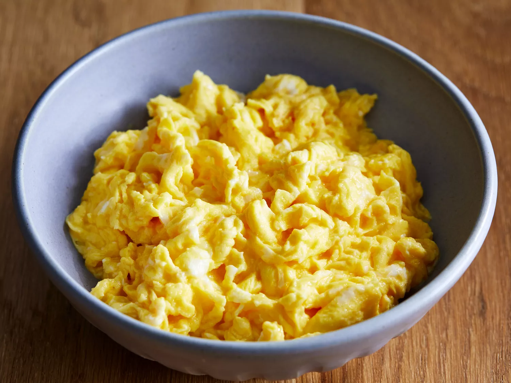

There are plenty of ways to cook eggs in the microwave, but this method for scrambled eggs is perhaps our favorite. You'll find the full recipe below, but here's a brief overview of what you can expect:
Crack the eggs into a microwave-safe bowl or mug, then mix well with milk and salt. Heat the eggs in the microwave for about 30 seconds, remove and beat well, then return to the microwave for another 30 seconds. Repeat until eggs are fully cooked and scrambled.
- 4 eggs
- 1/4 cup milk
- 1/8 teaspoon salt
- Cheese
- Ham or Bacon
- Veggies
- Herbs
- Gather all ingredients.
- Break the eggs into a microwave-proof mixing bowl. Add milk and salt; mix well.
- Pop the bowl into the microwave and cook on high power for 30 seconds. Remove bowl, beat eggs very well, scraping down the sides of the bowl, and return to the microwave for another 30 seconds.
- Repeat this pattern, stirring every 30 seconds for up to 2 1/2 minutes. Stop when eggs have the consistency you desire.
- Serve warm and enjoy!